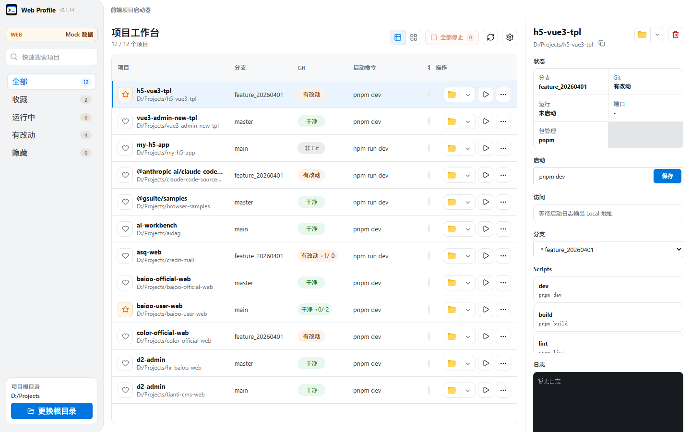
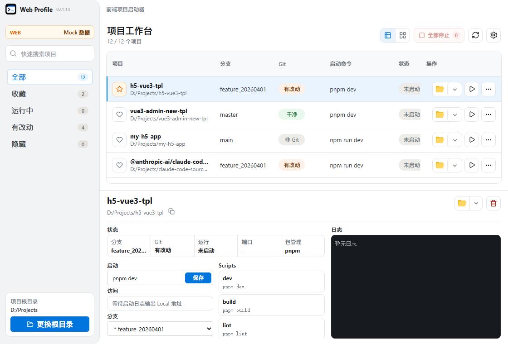

项目集中管理
扫描指定目录，通过搜索、收藏、运行状态和工作区改动快速筛选项目。
Web Profile
扫描、启动、访问、查看 Git 状态。把散落在终端和文件夹里的日常操作，收进一个本机工作台。

少切换，多专注。
Web Profile 读取本机项目元数据，把最常用的开发动作放在同一界面。没有云端同步，也没有额外账号。
扫描指定目录，通过搜索、收藏、运行状态和工作区改动快速筛选项目。
保存每个项目的启动命令，自动识别本地访问地址，也能一次停止所有进程。
读取 package.json 和锁文件，识别 npm、pnpm、yarn 或 bun，并列出可运行脚本。
集中显示分支、未提交修改及 ahead/behind 信息，支持切换分支与 Pull。
从同一入口使用资源管理器、VS Code、Cursor 或终端打开项目。
启动命令、标准输出、错误信息和进程状态都跟随当前项目展示。
一览无余。
表格视图同时呈现项目路径、当前分支、Git 状态、启动命令与操作入口。

在紧凑窗口中，状态、脚本、分支与日志自然移到下方，不丢失操作上下文。
现在开始。
适用于 Windows 10/11 x64。项目、配置和运行日志保留在你的电脑上。
ZIP 内包含标准安装版与免安装便携版，下载后解压即可选择使用。
运行要求：Windows 10/11 x64、Git、Node.js，以及项目所使用的 npm、pnpm、yarn 或 bun。便携版要求系统已安装 Microsoft Edge WebView2 Runtime。